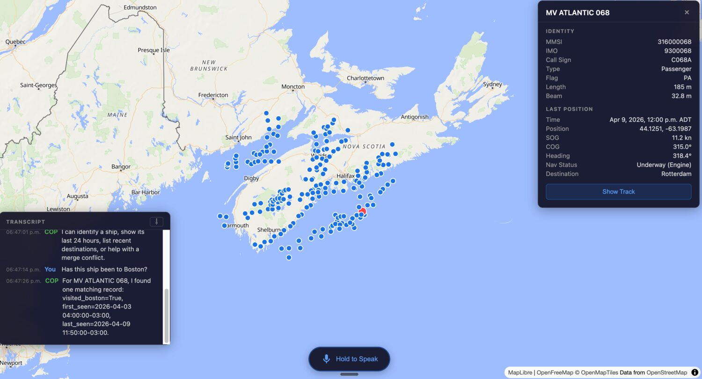
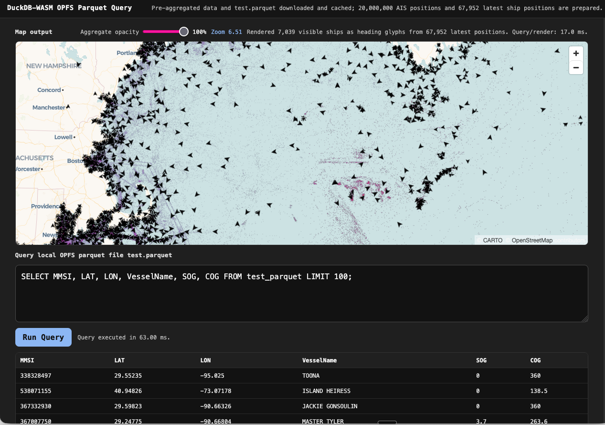
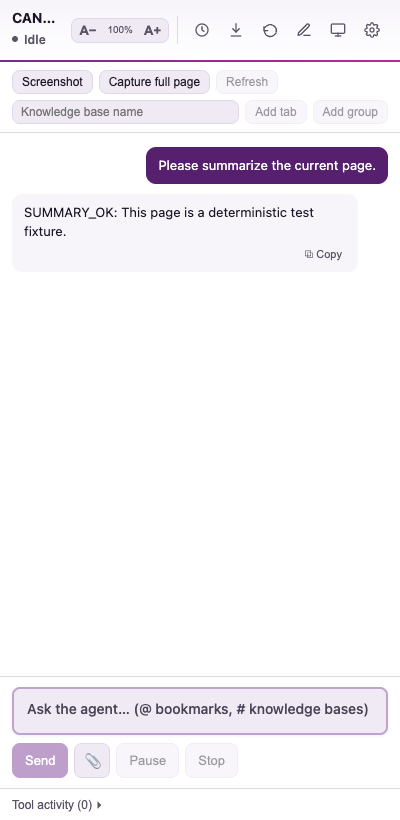
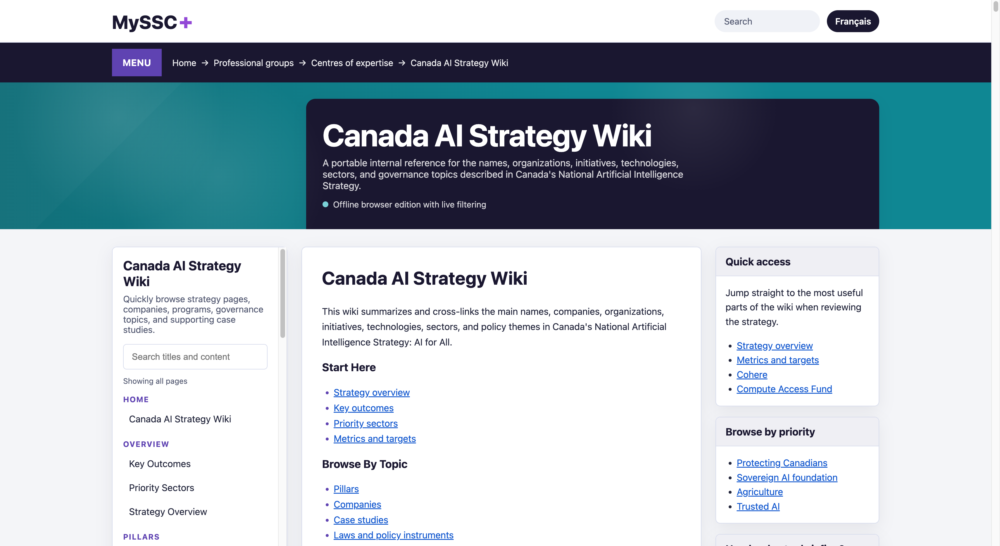

Building data pipelines, geospatial platforms, and AI tooling — mostly in Rust and Python. Senior Technical Advisor at Shared Services Canada | LinkedIn
Code around collecting and storing high volume geospatial data.
Ingests AIS positional data from file, TCP, Kafka, and WebSocket sources into Hive-partitioned Parquet (Zstd). Rust workspace with @collect-socket, @collect-file, @collect-kafka, @aisstream, and @ais-parse).
Lightweight TCP broker that connects to an upstream AIS feed and distributes framed NMEA messages across downstream consumers with load balancing, backpressure, and Prometheus metrics.
NMEA 0183 parser crate (crates.io) covering all AIS sentences and major GNSS sentences. Supports AIS Class A/B, NMEA 4.10 tag blocks, GPS/GLONASS/Galileo/BeiDou.
Converts marine cadastre data into Parquet format for efficient geospatial querying.
Benchmarks 743M-row AIS data across five Hive-partitioned Parquet layouts: row-group pruning, bloom-filter skipping, and Hilbert-curve interval pruning. Achieves 2.4× geo-mean speedup over baseline.
Strategy for storing Automated Identity System data in Parquet files optimised for time-range retrieval.
Experiments and benchmarks with TileDB for array-based geospatial data storage.
Experimentation around geospatial implementations — local storage, LLM integration, skills plugins.
Skill-driven geospatial intelligence platform — third iteration of the tommy family. Drop-in domain skills provide data sources, SQL logic, tool contracts, and map layers. Rust/Axum backend + SvelteKit frontend + WASM DuckDB.
Agent-assisted Common Operating Picture for maritime awareness. Voice and text commands query AIS data through a skill-driven architecture with results rendered on an interactive MapLibre map.

Maritime COP prototype with MapLibre frontend, FastAPI backend, local Whisper transcription, and a deterministic assistant loop for map-aware vessel queries.

In-browser geospatial visualisation using OPFS to store pre-aggregated Parquet files locally, queried with WASM DuckDB. Renders 50M+ points via WebAssembly-accelerated density tiles.
High-speed Mapbox Vector Tile server in Rust (Salvo). Generates MVT from Parquet files with admin UI, JWT auth, disk/Redis caching, i18n, and multi-source layer support.
Simple Rust tile server that reads geospatial data from Parquet, indexes with an R-tree, and serves density PNG tiles with time-range filtering.
Python counterpart of tilerust — FastAPI/Datashader tile server serving PNG density tiles from CSV data with Web Mercator projection.
Scrapy/Playwright crawler that scrapes heritage websites from a URL list, extracts text, and takes full-page screenshots — handling JavaScript-rendered content.
Multilingual text comparison across English, French, and Spanish using bert-score. Reads from SQLite, scores similarity, and stores results.
Translates text between English, French, and Spanish using Hugging Face transformer models, with automatic language detection and SQLite storage.
Compares multilingual translation quality across English, French, and Spanish.
Tiny, fast, low-memory OpenAI-compatible server running local GGUF chat models (llama.cpp) and multilingual embeddings (fastembed). Tool/function calling, Metal GPU on Mac, CPU on Windows.
Document indexing system that ingests PDF/HTML/DOCX/PPTX/XLSX, extracts text with semantic chunking, generates ONNX embeddings, and stores in DuckDB. Includes interactive CLI and MCP server for Claude/VSCode.
Builds txtai embedding databases for common research datasets (ArXiv, Wikipedia). Published as the ragdata pip package.

Chromium browser extension that places an AI agent in the side panel, using the browser itself as a toolset — opens tabs, searches, reads pages (incl. behind logins), and synthesises answers. Bring-your-own-model. Includes a companion Word add-in.
Extensible self-hosted AI platform (Open WebUI fork) operating fully offline. Supports Ollama, OpenAI-compatible APIs, RAG, multi-model chats, image generation, RBAC, and pipeline plugins.
Collection of reusable skill definitions for AI-powered applications — domain modules providing data sources, tools, and integration contracts for platforms like Tommy3.
Parses Outlook for Mac .olm archives and exports to EML/TXT/MD/JSON without extracting to disk. Preserves folder structure, attachments, categories, and conversation threads.

HTML wiki generation tool — processes structured content and renders static wiki sites.